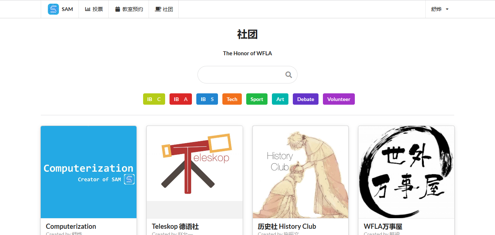
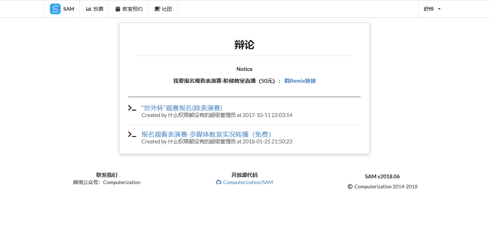
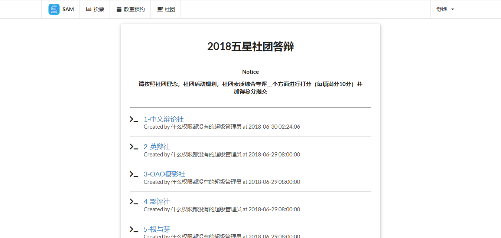

SAM是什么
SAM是一个校内信息化平台。它目前的地址是https://sam.shuye02.com
SAM主要由以下三大部分组成：
社团
社团部分是对于所有校内社团的索引和搜索。
目前正在开发中的功能有：
- 发布文章/公告
- 社团成员系统
- 发布作业并追踪成员完成进度

教室预约
这部分是社团活动教室的预约，只有社长有权限访问。这个功能是在2018年9月份为学生会社团部定做的，在2018年9月份中旬开放，目前处于关闭状态
投票
投票系统作为多功能用途的表单提交系统，可以进行多种用途的使用。
如下图，“世外杯”辩论赛曾通过投票系统进行观众报名，并统计观众报名场次

此外，学生会和CAS组也使用投票平台进行五星社团、新社团、末位社团的答辩和投票
